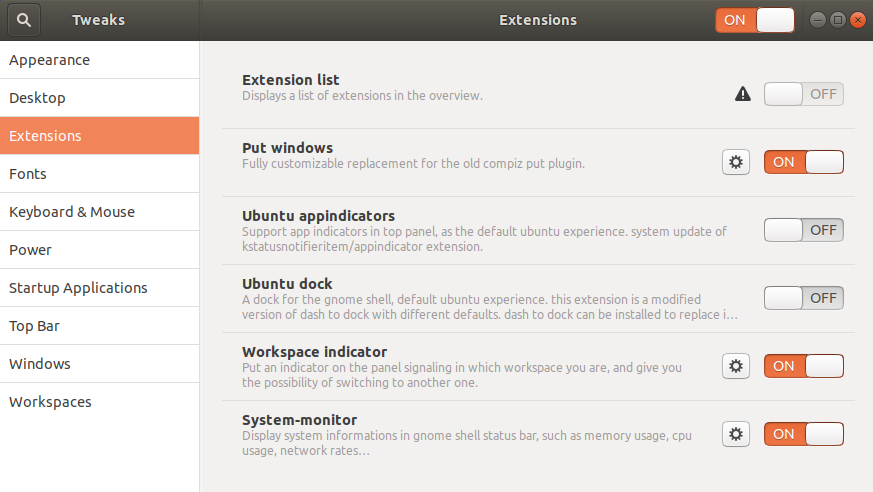
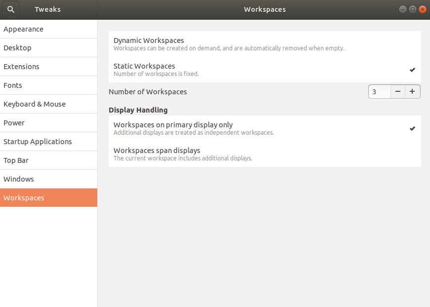

Some settings I find useful for a workstation
CPU monitoring on the main panel
Default Ubuntu desktop seems to become finally convenient enough for me starting from Ubuntu 18.04. Only several tweaks are missing. Constantly available CPU/Mem/HDD/Network monitor is one of them. Here is how to install a small widget for a top panel in the default GNOME desktop environment.
-
sudo apt-get install gir1.2-gtop-2.0 gir1.2-networkmanager-1.0 gir1.2-clutter-1.0 -
Go to Ubuntu Software and then search for
system monitor extension. Install one namedsystem-monitor:Display system information in GNOME Shell status bar
-
After the installation you should see a new applet in the main pannel. One can find settings in the context menu.
Desktop, workspaces and gnome extensions settings in Ubuntu 18.04
only show applications of current workspace in launcher:
sudo apt install dconf-editor
Navigate to org > gnome > shell > extensions > dash-to-dock and check isolate-workspaces
Show workspace indicator in the main pannel
Enable "Workspace Indicator" extension.

Static number of workspaces

Showing windows instead of notification "window is ready"
Install extension noannoyance
Autocomplete in shell
See autocomplete from history in terminal
Set nemo as default file manager
xdg-mime default nemo.desktop inode/directory application/x-gnome-saved-search
now if you run xdg-open ./ or press Super+E nemo starts.
Auto completion for fabric
Add
have fab && {
_fab_completion()
{
COMPREPLY=()
local cur tasks
tasks=$(fab --shortlist 2>/dev/null)
_get_comp_words_by_ref cur
COMPREPLY=( $(compgen -W "${tasks}" -- ${cur}) )
}
complete -F _fab_completion fab
}
to ~/.bash_completion.
Default permissions for directories
By default when you call mkdir abc the following permissions are created
u=rwx,g=rx,o=rx
That means that other users, also other groups, will be able to read and execute your files. That is a legacy setting. you can change it by replacing
UMASK 002
with
UMASK 077
in file /etc/login.defs. Here is the quote from this file:
# UMASK is the default umask value for pam_umask and is used by
# useradd and newusers to set the mode of the new home directories.
# 022 is the "historical" value in Debian for UMASK
# 027, or even 077, could be considered better for privacy
# There is no One True Answer here : each sysadmin must make up his/her
# mind.
#
# If USERGROUPS_ENAB is set to "yes", that will modify this UMASK default value
# for private user groups, i. e. the uid is the same as gid, and username is
# the same as the primary group name: for these, the user permissions will be
# used as group permissions, e. g. 022 will become 002.
Useful for server setup
Appearance customization
- Change background of the lock screen in Ubuntu 18 (stackoverflow)
Comments
comments powered by Disqus